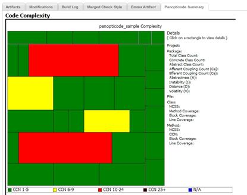

Developer Guide: How to write a Widget?
What is a CruiseControl Widget?
A CruiseControl Widget is a customized component for displaying arbitrary build result in the detail page of a build.
The CruiseControl binary build ships with a Panopticode Widget which allows SVG results generated by Panopticode to be displayed.
Widget Setup
To enable a widget, you should edit the widget's configuration file located at CRUISE_HOME/widgets.cfg.
#simply type the name of widget class net.sourceforge.cruisecontrol.dashboard.service.PanopticodeWidget
Make sure that you configure CruiseControl properly that it can copy the svg files into desired location as artifact: $ARTIFACTS_ROOT/{project name}/{build}/interactive-complexity-treemap.svg and $ARTIFACTS_ROOT/{project name}/{build}/interactive-coverage-treemap.svg
Using Widgets
From the build detail page you can see an additional tab named Panopticode Summary. If the project build has Panopticode output, charts will be shown as below.

Note that we are now only providing an SVG formatted report so you will need to have an SVG browser plugin installed. Firefox supports SVG by default. You may need to setup adobe SVG viewer for IE.
Implement your own Widget
You can also implement your own favourite widgets by implementing the following interface:
package net.sourceforge.cruisecontrol.dashboard.widgets;
import java.util.Map;
/**
* <pre>
* Widget is designed to help faciliate developers to contribute new output services,
* like emma, checkstyle, panopticode. the main function is getOutput which takes Map as parameter,
* CruiseControl reporting will pass in embedded values with keys:
*
* PARAM_PJT_ARTIFACTS_ROOT : Artifacts root of project, e.g. artifacts/project1
* PARAM_BUILD_ARTIFACTS_ROOT : Artifacts root of build, e.g. artifacts/project1/20051209122103
* PARAM_CC_ROOT : Parent folder of config.xml
* PARAM_PJT_NAME : Name of project e.g. project1
* PARAM_PJT_LOG_ROOT : Root of project log e.g.logs/project1
* PARAM_BUILD_LOG_FILE : Log file of build e.g. log20051209122103.xml
*
* <p> In order to enable your service in the system, go to the root directory of cruisecontrol,
* and simply add/edit widgets.cfg to include the class name. e.g. com.foo.Class <p>
* </pre>
*/
public interface Widget {
/**
* Widgets framework will associate artifacts root path with the following key.
*/
public static final String PARAM_PJT_ARTIFACTS = "PJT_ARTIFACTS";
/**
* Widgets framework will associate artifacts root path of the build with the following key.
*/
public static final String PARAM_BUILD_ARTIFACTS_ROOT = "BUILD_ARTIFACTS_ROOT";
/**
* Widgets framework will associate CruiseControl root path with the following key.
*/
public static final String PARAM_CC_ROOT = "CC_ROOT";
/**
* Widgets framework will associate project name with the following key.
*/
public static final String PARAM_PJT_NAME = "PJT_NAME";
/**
* Widgets framework will associate log root path with the following key.
*/
public static final String PARAM_PJT_LOG_ROOT = "PJT_LOG_ROOT";
/**
* Widgets framework will associate log file name with the following key.
*/
public static final String PARAM_BUILD_LOG_FILE = "BUILD_LOG_FILE";
/**
* CC Reporting system will pass in its web context root e.g. "/dashboard"
*/
public static final String PARAM_WEB_CONTEXT_PATH = "WEB_CONTEXT_ROOT";
/**
* @param parameters all the parameters user defined in widget, besides the embedded values.
* @return the Object to be displayed in the tab of build detail page
*/
public Object getOutput(Map parameters);
/**
* The displayed title in tab view in build detail page.
*
* @return the name displaied in tab view.
*/
public String getDisplayName();
}